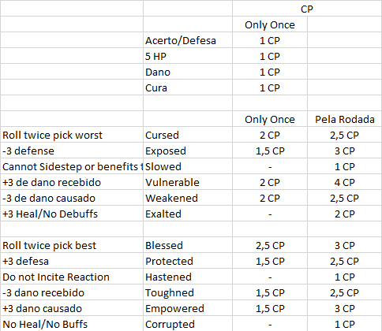

sabedoria para criar recursos para tanare adventure
É um novo recurso disponível no modo PvE, que não existe nas quests do jogo base, apenas na expansão do Tanares. Eles serão representados por Tokens e a princípio os podem ser ganhos de de três maneiras:
Os heróis podem ter um limite de 3 PP, podendo evoluir durante a campanha para um limite de até 5 PP de acordo com nível do herói.
Os PP podem ser usados de várias maneiras como:
Efeitos que Removem Power Point: É possível criar efeitos de monstros, ou acontecimentos em missões que removam Power Points. Pode ser interessante que eles tenham algum outro efeito negativo caso o inimigo não tenha Power Points para perder, mas não é obrigatório.
Balanceamento de Power Points: É importante esclarecer que 1 PP não é um recurso tão escasso, sendo importante não sobrevaloriza-lo ao definir quais ganhos o jogador tem ao gastar PP's durante seus ataques. Estes bônus devem existir mas devem ser aplicados com cuidado para evitar que o ataque fique muito forte.
Um PP tem o valor de 2,5 CP’s, mas nunca podem ser convertidos diretamente em dano nos ataques ou itens.Os Power Points devem sempre ser utilizados para ativar efeitos e poderes situacionais, nunca coisas que seriam sempre genericamente úteis.
Isso se deve ao fato de que os PPs serão utilizados principalmente para ativar os efeitos das Skill Trees, e todos eles serão efeitos situacionais. Se um poder ou item tiver um uso genérico dos PP’s, eles acabaram sendo sendo usados neste poder, o que torna as skill trees irrelevantes.
Uma coisa interessante que pode fazer parte de itens e ataques são efeitos que acontecem somente quando o jogador está com zero PPs. Se este efeito for particularmente distinto dos demais efeitos do ataque ele pode criar uma opção estratégica onde você tenta zerar seus próprios powerpoints para conseguir acessar o efeito, o que pode ser interessante.
Como construir um Hand Power:
1o Passo: Defina o efeito do Hand Power.
2o Passo: Descubra o valor em CP do efeito que você definiu para o Hand Power, como se fosse o CP para o efeito de um ataque com duração de 1 rodada.
3o Passo: Multiplique este valor de CP por 5 para descobrir o CP que deverá ser considerado como utilizado no Hand Power. Este deverá ser o valor a ser descontado do CP do ataque para balanceá-lo.
4o Passo: Adicione um efeito no ataque dizendo: "Causa um dano adicional de +X por carta de ataque primário na sua mão além desta." O X nesta frase deve ser substituído pelo valor de CP do efeito, descoberto no passo número 2. (O CP deste efeito já está incluso na multiplicação por 5 feita no passo 3, considere que ele custa 0 CPs nos Hand Powers seguindo esta regra.)
Exemplo:
Vamos construir um Hand Power que diga "Seus ataques ganham: Efeito - Cure 2 pontos de dano em um aliado a até 8 quadrados de distância."
1o Passo: Já fizemos, definimos que ele cura 2 em um aliado quando você acerta um ataque.
2o Passo: Nós sabemos pela tabela que 2 pontos de cura valem 2 CP. Então temos o valor de 2.
3o Passo: Multiplicamos o valor 2 por 5 e chegamos em 10 CP. Ou seja este Hand Power custa 10 CPs do ataque.
4o Passo: Nosso efeito vai ficar assim: "Causa um dano adicional de +2 por carta na sua mão além desta." pois 2 CPs foi o valor que encontramos no passo número 2.
Um poder de nível 3 tem 22 CPs pela documentação.
Então nosso poder ficaria:
Poder de Exemplo (Mystic) - Level (3)
Range: (8) square / Target: 1
Handpower (CP=10): Seus ataques ganham: Efeito - Cure 2 pontos de dano em um aliado a até 8 quadrados de distância.
Hit: (9) damage + effect
Miss: (10) Residual Damage
Effect (CP=3):
1- Causa um dano adicional de +2 por carta de ataque primário na sua mão além desta.
2- (Temp) Um aliado dentro do alcance fica Blessed.
Temporário: Termina no início de seu próximo turno.
Cálculo de CP:
10 CP do Hand Power (5 vezes o efeito de 2 de Cura que vale 2 CP)
9 CP do Dano
0 CP do Efeito numero 1, pois ele está incluso no custo do Hand Power.
3 CP do Efeito numero 2, pois é o valor
para o Bless por 1 rodada segundo a tabela.
Total: 22 CPs, ou seja a alocação de CPs para um poder de nível 3.
Cada ataque vai possuir um símbolo, que será referente a fonte de poder do mesmo. Essa nova variável poderá ser usada de várias maneiras no desenvolvimento, para criar sinergias (como por exemplo, se um monstro tiver um efeito Dark sobre ele, um determinado ataque pode dar mais dano em inimigos que estejam com um efeito Dark sobre eles, etc...), além de fraquezas dos monstros, efeitos em tiles, etc...
Serão representadas por símbolos, no estilo “Magic”.
São usados nos ataques, monstros, itens e outros elementos.
As fontes serão: Dark, Martial, Primal, Mystic

Esta tabela serve como referência para o valor de CPs dos diferentes efeitos. (Efeitos com condições especiais devem ser balanceados com base na raridade de sua ocorrência!)
Os valores básicos para Acerto, Defesa, Dano e Cura são todos 1 CP, enquanto os diferentes efeitos de buffs e debuffs variam.
Note que ao realizar o balanceamento dos poderes existem questões que podem alterar os valores relativos providos na tabela, que devem ser utilizadas como referência e não como valores absolutos para a o balanceamento. (Ex: Um drawback que deixe você Corrupted é pior se você for um personagem melee do que se você for um personagem ranged. Um efeito que deixa o alvo Exalted por uma rodada como Benefit e como efeito pode curar aquele mesmo alvo é muito mais poderoso do que um efeito que só cause o Exalted e cause dano, já que isso vai fazer com que o bônus de cura possivelmente seja ativado mais vezes.)
Todos os ataques, monstros e itens podem ter quaisquer de suas partes convertidas em CPs e utilizadas da forma que for mais interessante para gerar o material. Nenhum efeito pode ser colocado em um monstro, item ou ataque sem que este efeito tenha um cálculo de valor em CP’s que deve ser considerado para o valor total da peça sendo desenvolvida.
O valor de um Benefício/Drawback, Buff ou Debuff deve ser sempre comparado aos efeitos fornecidos na tabela de equilíbrio de CP. (Dano, Defesa, Acerto, etc...) Por exemplo, um benefício que te deixe rolar duas vezes e escolher o melhor é equivalente a cerca de ~+5 de ataque, e deveria custar no mínimo 4 CP, ou o equivalente a 8 de dano do ataque, considerando seu valor e a desvantagem de que você não poderá ser afetado por outro efeito igual, e estará vulnerável a efeitos que anulam seu efeito, sendo que isso não seria igual no caso de um bônus puro de 5 de ataque.
Todo efeito temporário deve descrever ao fim como ele acaba. Olhe as cartas do jogo base como exemplo, os efeitos podem acabar em um turno, mas podem ter alguma outra condição qualquer. Vale notar que muitos efeitos do jogo base terminam ou ao serem usados uma vez ou quando se inicia um novo turno de quem o aplicou. Isso é o comum mas não é obrigatório. Em geral usa-se o termo "(Ends if used)" para denotar um efeito que acaba imediatamente assim que ele acontece uma única vez. Isso é importante para permitir um balanceamento fino. Um efeito que te dê protected por uma rodada inteira pode te ajudar contra vários ataques e é mais difícil de balancear que um efeito que de Protected até você ser atacado uma vez, o que é bem mais simples. Ambos são possíveis de serem criados, mas devem guardar as proporções corretas de efeitos e dano durante o balanceamento
Os monstros são divididos em 4 categorias:
Os diferentes tipos de monstros não possuem um efeito em si, mas podem ser utilizados pelas cartas para gerar diferentes consequências. (Ex: Uma arma matadora de mortos-vivos poderia ter como sua propriedade causar +4 de dano em alvos do tipo Undeads.)
Foi decidido que teremos dois tokens marcadores, que terão o tamanho aproximado de 1 square, e que servirão para cada um dos times marcar efeitos de seus poderes e itens.
Cada time terá somente 1 Marcador, sendo inicialmente um azul e um vermelho. No PvP é um por time, no PvE um para os heróis e um para os vilões.
Somente um efeito pode estar utilizando o marcador por vez, e todo efeito que utilizar o marcador para marcar qualquer coisa, seja no tabuleiro ou seja em uma carta ou ficha deve incluir em seu texto como o mercador é removido e incluir que ele só pode ser utilizado caso o marcador esteja disponível.
(Ex: Um ataque pode colocar este marcador em um espaço adjacente do tabuleiro e dizer que todos os monstros que entrarem em quadrados adjacentes ao marcador recebem 4 de dano. Este ataque deve declarar como e quando o marcador é removido, por exemplo "remova o marcador quando uma habilidade ou efeito de outro jogador requisitar o uso dele." ou "remova-o no início do seu próximo turno.".)